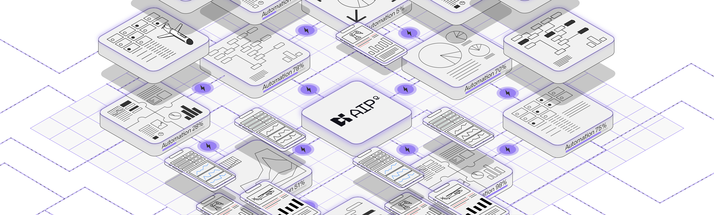

Palantir's Artificial Intelligence Platform (AIP) connects AI with your data and operations. AIP is designed to drive automation across operational processes, providing a comprehensive suite of tools that can be used by everyone in an organization, from developers to frontline users.
AIP's builder tools like AIP Logic, AIP Chatbot Studio (formerly known as AIP Agent Studio), and AIP Evals enable the development of production-ready AI-powered workflows, agents, and functions on top of the Ontology and developer toolchain. Additionally, AIP transforms the application environment by allowing sandboxed, autoscaling applications to integrate generative AI seamlessly within existing security, audit, and resource management frameworks.
Together with Foundry (Palantir's data operations platform) and Apollo (Palantir's mission control for autonomous software deployment), AIP forms an operating system that can deliver a full range of AI-driven products, from LLM-powered web applications to mobile applications using vision-language models to edge applications that embed localized AI.
:::callout{theme="success"} Get started with the "Speedrun: Your first AIP workflow" â course on learn.palantir.com â. :::
The remainder of this page provides a brief overview of key AIP benefits. For more details about AIP's capabilities, we recommend reviewing the AIP documentation, including the AIP application reference.
Palantir AIP can integrate seamlessly with your organization's existing data on a Foundry enrollment. This enables you to build and interact with LLM-powered agents and workflows that leverage data from a wide array of data sources and formats.
AIP incorporates all of Palantir's advanced security measures for the protection of sensitive data in compliance with industry regulations. AIP provides robust access controls, encryption, and auditing capabilities to maintain data integrity and transparency. Moreover, built-in governance tools help organizations maintain accountability and historical lineage in AI operations.
To learn more about how LLMs securely process user prompts in the platform, review FAQs: Security and Privacy of Palantir's AIP leveraging third-party-hosted LLMs â by selecting Palantir AIP FAQs.
AIP provides a comprehensive suite of tools for building, training, and deploying large language models. Supporting a range of different large language models allows data scientists and engineers to work with their preferred tools and pick the models that are best suited for each use case. Additionally, AIP offers version control and collaboration features, enabling teams to manage models efficiently throughout their lifecycle.
Designed to handle large-scale data operations, AIP ensures that AI models can be deployed and scaled according to organizational needs. The platform's architecture supports distributed computing, allowing for high-performance processing and real-time analytics, which are crucial for mission-critical applications. AIP also provides granular control of resource use and limitation setting.
To learn more about the tools that enable developers to monitor and optimize the performance of the agents and applications that are built with the platform, review the Ontology and AIP observability documentation.
Trust is critical when building AI workflows for production deployment; for LLMs, trust comes from explainability and transparency, as well as from rigorous evaluations. AIP provides tools for generating detailed audit trails, explanations, and evaluations of model decisions, helping users understand and trust the outcomes. This trust is vital for organizations to safely deploy AI in real-world situations and make informed and ethical decisions based on AI insights.
Note: AIP feature availability is subject to change and may differ between customers.